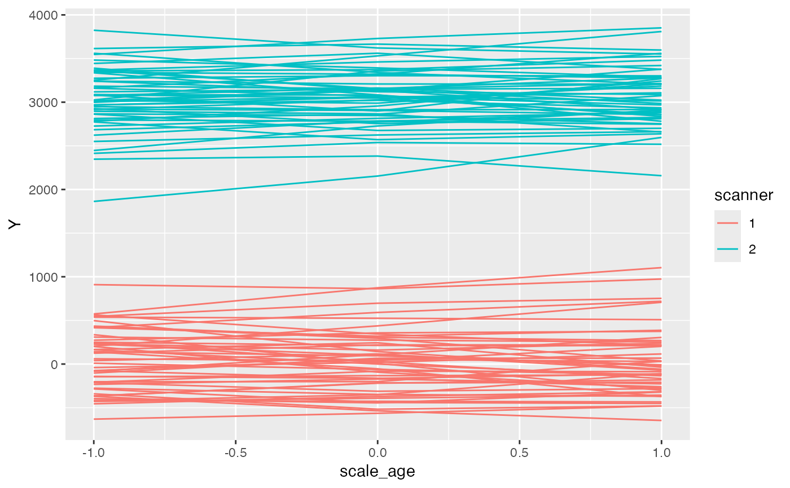
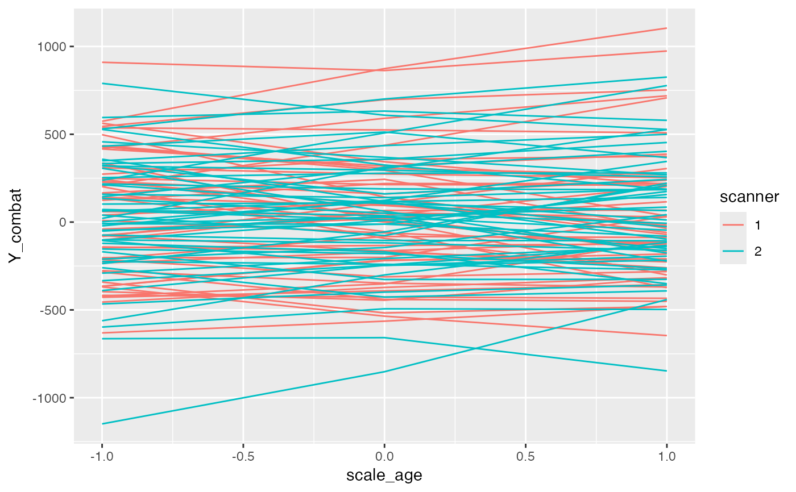
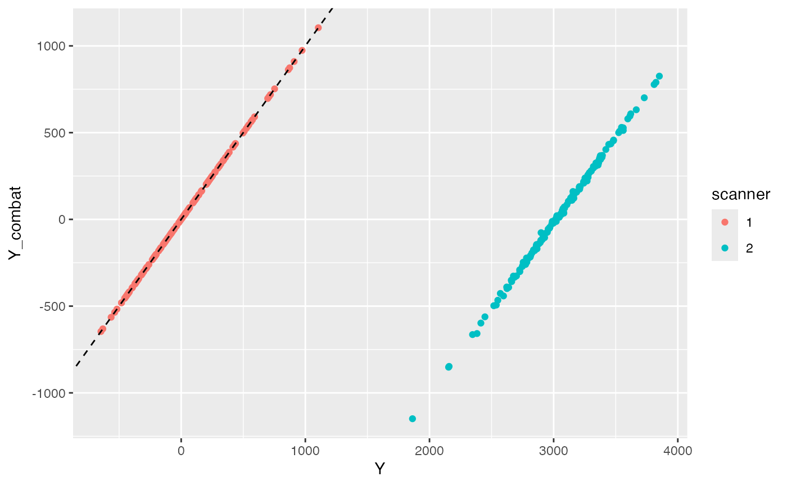

ComBat Harmonization of Location and Scale
Arguments
- fixed
a two-sided linear formula object describing the fixed-effects part of the model
- data
a data frame
- random1
primary random effects. See `random` in [nlme::lme()]
- random2
secondary random effects. If model with `random1` fails to converge
- weights
See [nlme::lme()] and [nlme::varIdent()]. This should be of the form, e.g. `varIdent(form = ~ 1 | scanner_type)` so that results are harmonized with respect to the variance per scanner type. The scanner type variable should be a factor variable with at least two levels. Data will be harmonized assuming the reference scanner (lowest level) of this factor variable.
- ...
other arguments passed to [nlme::lme()]
References
Beer JC, Tustison NJ, Cook PA, Davatzikos C, Sheline YI, Shinohara RT, Linn KA; Alzheimer’s Disease Neuroimaging Initiative. Longitudinal ComBat: A method for harmonizing longitudinal multi-scanner imaging data. *Neuroimage*. 2020 Oct 15;220:117129. doi: 10.1016/j.neuroimage.2020.117129. Epub 2020 Jul 5. PMID: 32640273; PMCID: PMC7605103.
Examples
library(tidyverse)
library(nlme)
#>
#> Attaching package: ‘nlme’
#> The following object is masked from ‘package:dplyr’:
#>
#> collapse
set.seed(20250312)
dd <- tibble(
id = 1:100,
scanner = as.factor(c(rep(1,50), rep(2,50))),
ran.int = rnorm(sd=350, n = 100),
ran.slope = rnorm(sd=120, n = 100)
) %>%
cross_join(tibble(scale_age = c(-1,0,1))) %>%
mutate(
e = rnorm(sd=60, n = 300),
Y = case_when(
scanner == 1 ~ ran.int + ran.slope*scale_age + e,
scanner == 2 ~ 3000 + ran.int + ran.slope*scale_age + 1.4*e
))
dd$Y_combat <- ComBat(Y ~ scanner + scale_age, data = dd,
random1 = ~scale_age|id,
random2 = ~1|id,
weights = varIdent(form = ~ 1 | scanner))
ggplot(dd, aes(x=scale_age, y=Y)) +
geom_line(aes(group = id, color = scanner))

ggplot(dd, aes(x=scale_age, y=Y_combat)) +
geom_line(aes(group = id, color = scanner))

ggplot(dd, aes(x=Y, y=Y_combat)) +
geom_point(aes(color = scanner)) +
geom_abline(intercept = 0, slope = 1, linetype = 'dashed')

# Model used for harmonization:
summary(lme(Y ~ scanner + scale_age,
data = dd,
random = ~scale_age|id,
weights = varIdent(form = ~ 1 | scanner)))
#> Linear mixed-effects model fit by REML
#> Data: dd
#> AIC BIC logLik
#> 3966.315 3995.865 -1975.158
#>
#> Random effects:
#> Formula: ~scale_age | id
#> Structure: General positive-definite, Log-Cholesky parametrization
#> StdDev Corr
#> (Intercept) 331.92948 (Intr)
#> scale_age 122.46724 0.045
#> Residual 50.73969
#>
#> Variance function:
#> Structure: Different standard deviations per stratum
#> Formula: ~1 | scanner
#> Parameter estimates:
#> 1 2
#> 1.000000 1.333929
#> Fixed effects: Y ~ scanner + scale_age
#> Value Std.Error DF t-value p-value
#> (Intercept) 29.1463 47.10299 199 0.61878 0.5368
#> scanner2 3021.4973 66.68379 98 45.31082 0.0000
#> scale_age 0.9544 12.95072 199 0.07369 0.9413
#> Correlation:
#> (Intr) scnnr2
#> scanner2 -0.706
#> scale_age 0.031 -0.001
#>
#> Standardized Within-Group Residuals:
#> Min Q1 Med Q3 Max
#> -2.7199229 -0.3555095 -0.0468977 0.4128098 2.3620201
#>
#> Number of Observations: 300
#> Number of Groups: 100
# After harmonization, scanner fixed effect and variance weights are reduced:
summary(lme(Y_combat ~ scanner + scale_age,
data = dd,
random = ~scale_age|id,
weights = varIdent(form = ~ 1 | scanner)))
#> Linear mixed-effects model fit by REML
#> Data: dd
#> AIC BIC logLik
#> 3933.827 3963.377 -1958.914
#>
#> Random effects:
#> Formula: ~scale_age | id
#> Structure: General positive-definite, Log-Cholesky parametrization
#> StdDev Corr
#> (Intercept) 331.83164 (Intr)
#> scale_age 122.18277 0.044
#> Residual 50.74941
#>
#> Variance function:
#> Structure: Different standard deviations per stratum
#> Formula: ~1 | scanner
#> Parameter estimates:
#> 1 2
#> 1.000000 1.000095
#> Fixed effects: Y_combat ~ scanner + scale_age
#> Value Std.Error DF t-value p-value
#> (Intercept) 29.105228 47.09025 199 0.6180733 0.5372
#> scanner2 0.082063 66.56682 98 0.0012328 0.9990
#> scale_age 1.160780 12.73440 199 0.0911531 0.9275
#> Correlation:
#> (Intr) scnnr2
#> scanner2 -0.707
#> scale_age 0.029 0.000
#>
#> Standardized Within-Group Residuals:
#> Min Q1 Med Q3 Max
#> -2.72026270 -0.34988966 -0.03585107 0.41182502 2.36152764
#>
#> Number of Observations: 300
#> Number of Groups: 100